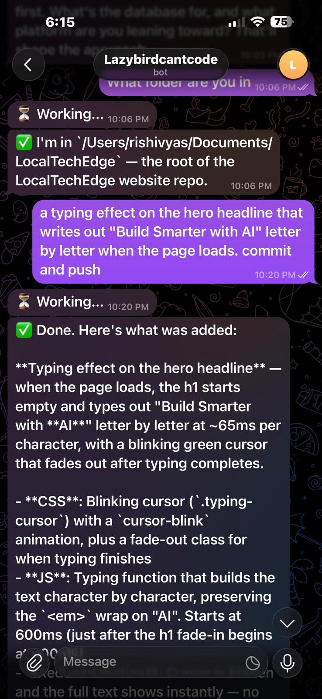

Anthropic built Claude Remote Control — a polished, first-party way to run Claude Code headlessly from anywhere. It's great. It's also locked behind the Max plan at $200/month.
I'm on Pro. I wanted the same thing. So I built my own.
Think of it like smartphones: Claude RC is the iPhone — sleek, integrated, premium-priced. Remote Control SE is the Android — open, scrappy, runs on anything. Same core job, fraction of the cost.
It's 175 lines of Node.js. Here's the story of how a failed configuration attempt turned into a tool — and a mild existential crisis about pricing tiers.
It Started With Frustration (And Too Much Chai)
I wanted to ship code from my phone. Small stuff — copy changes, CSS fixes, quick features. The kind of work that takes 2 minutes to code but 10 minutes to context-switch into: open laptop, find terminal, remember what branch you're on, lose 30 minutes to "just one more thing."
Anthropic had just launched remote/headless mode for Claude Code, and I thought: perfect, that's exactly what I need.
So I sat down to configure it. Read the docs. Tried different setups. Hit walls. Then I realized — this feature requires a Max subscription. I'm on Pro. I'd spent an evening reading docs for something I couldn't even use.
Classic developer moment. The docs didn't reject me — they just let me keep trying until I figured it out myself. Very polite. Very frustrating.
Then I Looked at What I Already Had
Claude Code has a CLI. It accepts prompts with -p. Telegram has a bot API. My MacBook was sitting right there, doing nothing useful.
The whole problem was just: get a message from my phone to a shell command, and send the output back.
That's not a product. That's plumbing. And I've been doing plumbing for 20 years — started as a Mainframe dev, shipped COBOL before most of HN was born. A Telegram bot wasn't going to stop me.
Three Hours Later
One file. One flow:
Phone (Telegram)
↓
Telegram Bot API (long polling)
↓
Node.js bridge — 175 lines
├── Allowlist check
├── Input sanitization
└── spawn('claude', ['-p', prompt])
↓
Project working directory
↓
stdout captured → chunked → sent back to TelegramNo database. No queue. No Docker. No cloud. It runs on my MacBook with npm start. The most complex piece of infrastructure involved is my Wi-Fi router.
The Interesting Bits
It uses the CLI, not the API. This is the key insight that saved me weeks of work. The Claude Code CLI gives you the full agent for free — file reading, multi-file editing, git integration, project context awareness. If I'd called the API directly, I would've had to reimplement all of that. The CLI does it all and I just capture the output. Sometimes the laziest solution is the smartest one.
const proc = spawn(bin, [...baseArgs, sanitize(prompt)], {
cwd: WORKING_DIR,
stdio: ['ignore', 'pipe', 'pipe'],
});Security is simple but real. Input gets sanitized (strips $(), backticks, &&, pipes, redirects). Process spawning uses spawn() with argument arrays — no shell interpretation. And only my Telegram user ID is allowlisted. Not production-grade, but solid for a personal tool. If someone hacks my Telegram bot, they deserve whatever's in my working directory.
It already supports multiple AI drivers. The bot can route to either Claude Code or Aider. Switching is one environment variable:
AI_DRIVER=claude # or "aider"Aider runs with --no-auto-commits so you stay in control. This is where it gets interesting for the roadmap — but more on that later.
What It Looks Like
Here's me adding a typing animation to a website from my phone, sitting in a cafe:

I typed: "a typing effect on the hero headline that writes out 'Build Smarter with AI' letter by letter when the page loads. commit and push"
A minute later — CSS animations, character-by-character JS, reduced motion support, committed and pushed. The change was live before I finished my coffee. The barista was more impressed than my manager would have been.
iPhone vs Android
Here's the honest comparison:
| Claude RC (iPhone) | Remote Control SE (Android) | |
|---|---|---|
| Plan required | Max ($200/mo) | Pro ($20/mo) |
| Setup | Anthropic's config | 5-minute DIY |
| AI drivers | Claude only | Claude, Aider, any CLI tool |
| Infrastructure | Anthropic's cloud | Your machine |
| Open source | No | Yes |
| Extensible | No | Add any driver you want |
| Polish | High | "It works" |
Let me be honest: Claude RC is the better product. No question. It's what you'd use if you're a team, if you need reliability guarantees, if you're running a business on it.
But Remote Control SE is what you use when you're a developer on a Saturday night who just wants to fix a damn CSS bug from your couch without opening a laptop. And because it's driver-agnostic, it's not locked to any single AI vendor. Today it supports Claude Code and Aider. Tomorrow it could support Cursor's CLI, Codex, or whatever ships next.
That's the Android advantage — it's open.
The Stack
| Component | Choice |
|---|---|
| Runtime | Node.js 18+ |
| Bot framework | grammY |
| AI drivers | Claude Code CLI, Aider |
| Lines of code | 175 |
| Dependencies | 2 (grammy, dotenv) |
| Database | None |
| Deployment | My laptop |
| Complexity | Less than my morning coffee order |
What's Next
If there's interest, I want to build a hosted version:
- Multi-project support — switch between repos with a command
- More AI drivers — Cursor, Codex, Windsurf, whatever has a CLI
- Conversation history — so follow-up messages have context
- Cloud deployment — so it doesn't depend on your laptop being open
- WhatsApp support — Telegram works great, but WhatsApp has broader reach
The vision: a universal remote control for AI coding assistants. The Android of AI dev tools — open, extensible, works with everything. You shouldn't need a $200/month plan or a laptop open to ship a quick fix.
And if Anthropic eventually makes remote control available on Pro? Great. I'll still have a tool that works with every AI coding assistant, not just one.
Try It
If you want to set it up yourself, it takes about 5 minutes:
- Create a Telegram bot via @BotFather
- Get your Telegram user ID
- Clone the repo, configure
.env:
TELEGRAM_BOT_TOKEN=your_token
AUTHORIZED_TELEGRAM_IDS=your_id
WORKING_DIR=/path/to/your/project
AI_DRIVER=claudenpm install && npm start
Start texting your bot. Ship code from your phone. Tell your laptop it can rest.